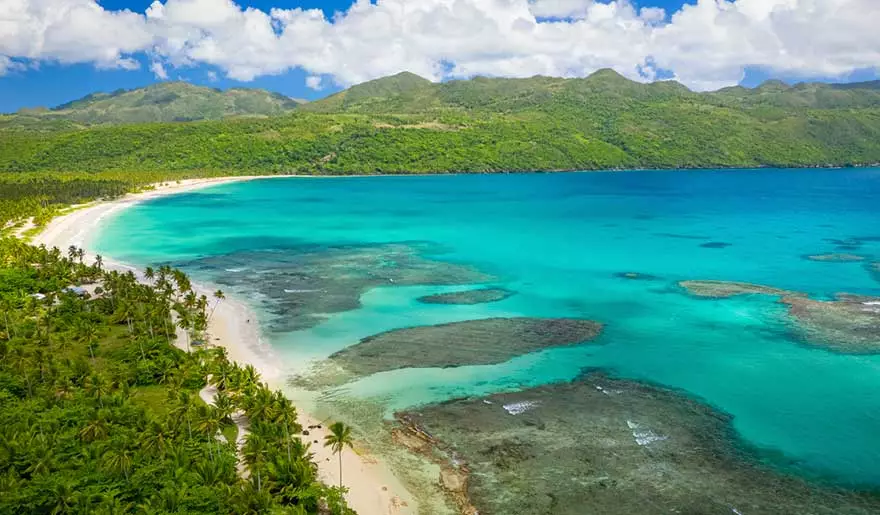
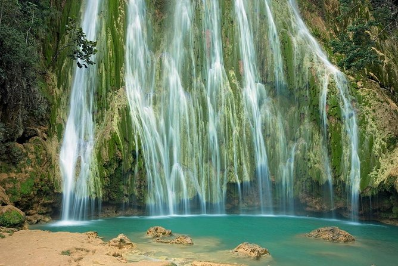
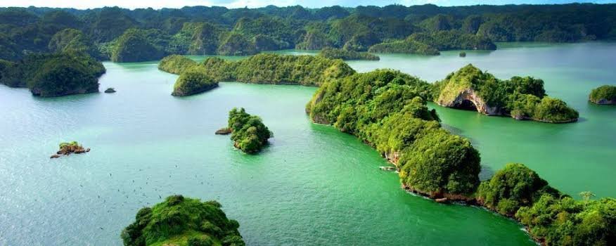
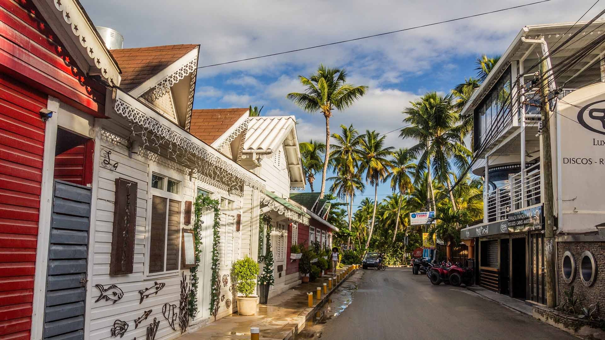

Qué hacer en Las Terrenas en 7 días
Las Terrenas es, sin duda, uno de los secretos mejor guardados del Caribe. Mientras Punta Cana concentra el turismo masivo de todo incluido, este pueblo pesquero de la Península de Samaná ha sabido crecer sin perder su esencia: aguas turquesas, palmeras reales, gastronomía de verdad y una mezcla multicultural única en toda República Dominicana.
Si tienes 7 días — la estancia ideal para conocerla sin prisas — aquí tienes el itinerario que nosotros recomendamos a todos nuestros huéspedes.
Alójate en una villa privada con piscina en lugar de un hotel. Las Terrenas es perfecta para tener tu base tranquila, salir a explorar durante el día y volver a tu ritmo. Villa Vitao Garden está a 5 minutos de la playa principal.
Día 1 — Llegada y Playa Bonita
El aeropuerto más cercano es El Catey (AZS), a solo 45 minutos. El primer día, sin presiones: instalarse, almorzar en el pueblo y descubrir Playa Bonita, considerada por muchos la más bonita de Samaná.
- Mañana: Traslado desde el aeropuerto, check-in en la villa
- Mediodía: Primer baño en Playa Las Terrenas
- Tarde: Paseo por el pueblo, primera cerveza Presidente
- Noche: Cena en El Cayuco — mariscos frescos del puerto

Playa Bonita, Las Terrenas
Días 2-3 — Playas y snorkel
Playa Rincón está considerada una de las mejores de todo el Caribe: 8 km de arena blanca virgen sin apenas construcciones, agua color esmeralda y cocoteros. El trayecto es parte de la experiencia.
- Playa Rincón: La joya de la corona, 1h en lancha desde Las Galeras
- Playa El Portillo: Perfecta para snorkel entre corales
- Playa Cosón: Ideal para caminar al amanecer
- Snorkel en Cayo Levantado: Tortugas y peces tropicales
Para Playa Rincón, contrata una excursión local (20-30 USD/persona, incluye comida). Para Playa Cosón, alquila una moto en el pueblo.

Playa Rincón, Samaná
Día 4 — Cascada El Limón
A 45 minutos de Las Terrenas, la Cascada El Limón cae 40 metros desde la montaña directamente a una poza natural de agua fría. El camino se hace a caballo por la selva tropical.
- Salida temprana (8h) para evitar el calor
- Ruta a caballo: 30-40 minutos por selva tropical
- Baño en la poza al pie de la cascada
- Almuerzo en rancho local: pollo al carbón y tostones
- Precio: 25-40 USD por persona con caballo incluido

Cascada El Limón, Samaná
Día 5 — Los Haitises y Samaná
El Parque Nacional Los Haitises: manglares, mogotes kársticos, cuevas con pictografías taínas y colonias de pelícanos. Se visita en lancha desde Samaná cruzando la bahía.
- Salida en lancha desde Samaná (45 min desde Las Terrenas)
- Navegación entre manglares y formaciones kársticas
- Cueva de la Arena: pictografías taínas del siglo XV
- Avistamiento de aves: pelícanos, fragatas, martines pescadores
De enero a marzo, la Bahía de Samaná acoge miles de ballenas jorobadas. Uno de los mejores avistamientos del mundo.

Parque Nacional Los Haitises, Samaná
Día 6 — Pueblo, mercado y gastronomía
Un día tranquilo para explorar el pueblo. Las Terrenas tiene una comunidad internacional única — franceses, italianos, alemanes y españoles que llegaron de vacaciones y nunca se fueron.
- Mercado Pueblo de los Pescadores: Larimar y artesanía local
- Desayuno: Croissant en la boulangerie francesa
- Almuerzo: Langosta fresca en chiringuito de playa
- Tarde: Kayak por la costa o clase de kitesurf
- Noche: Sundowner y mercado nocturno

Pueblo de Las Terrenas
Día 7 — Mañana libre y salida
El último día, sin prisa. Desayuno largo, un último baño, comprás el larimar que no compraste antes y te vas con la promesa de volver — porque Las Terrenas siempre atrapa.
Información práctica
Cómo llegar a Las Terrenas
- Aeropuerto El Catey (AZS): El más cercano, 45 minutos. Vuelos directos desde Europa (Air Europa, Iberia en temporada alta)
- Aeropuerto de Punta Cana (PUJ): Más conexiones internacionales, pero 3-3,5h en coche. Opción si hay precio muy diferente
- Aeropuerto Las Américas, Santo Domingo (SDQ): 2,5h por la carretera de montaña. Escénica pero cansada
Cuándo ir
- Mejor época: Diciembre a Abril — temporada seca, sol garantizado
- Temporada de ballenas: Enero a Marzo
- Temporada de lluvia: Mayo a Noviembre — precios más bajos, aguaceros puntuales
- Huracanes: Agosto-Octubre es el pico, aunque rara vez afectan directamente a Samaná
Moneda y pagos
- Moneda: Peso Dominicano (DOP). 1 EUR ≈ 65 DOP (2025)
- El dólar americano se acepta en casi todos los sitios
- Tarjeta solo en establecimientos grandes — lleva siempre algo de efectivo
- Cajeros ATM disponibles en el pueblo
Si buscas la base perfecta para este itinerario, Villa Vitao Garden está a 5 minutos de la playa, en un complejo residencial privado con seguridad. 3 habitaciones en suite, piscina privada y todo lo que necesitas para que cada día sea una aventura y cada noche un descanso de verdad. Ver disponibilidad →
Siguiente artículo
Las Terrenas vs Punta Cana: ¿Cuál elegir? →